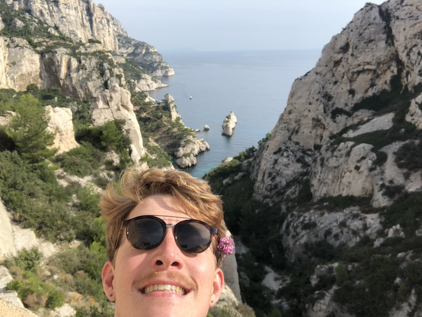

|  | Department of Mathematics CUNY Graduate Center 365 Fifth Ave New York, NY, 10016 e-mail |
I'm a PhD student in mathematics at CUNY Graduate Center, working in smooth dynamical systems. My advisor is Enrique Pujals.
Since 2023 I have been a graduate student fellow for the CUNY Academy for the Humanities and the Sciences. From 2018-2021 I was an instructor at Brooklyn College.